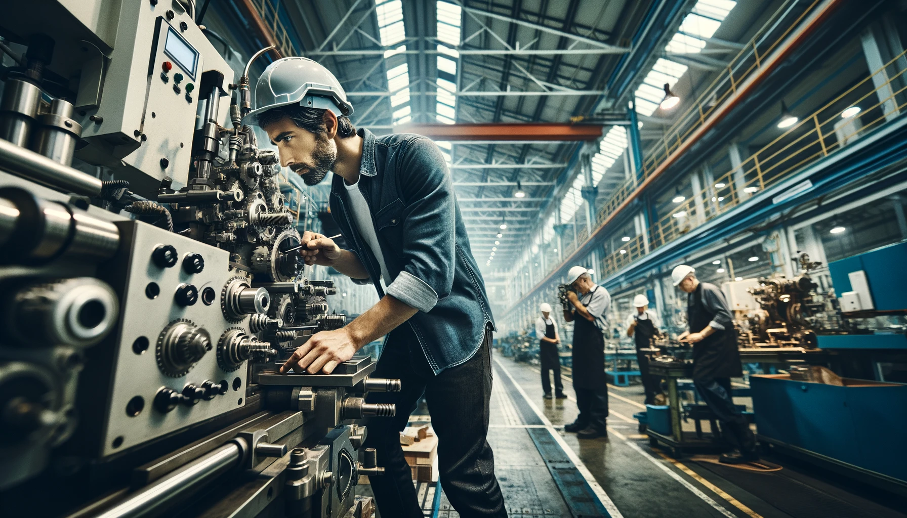

Mechanische Fertigung
Entdecken Sie bei uns die Kunst der Präzisionsfertigung, wo fortschrittliche Technologien und handwerkliches Können Hand in Hand gehen. Wir spezialisieren uns auf eine Vielzahl von Fertigungsverfahren, darunter Fräsen, Drehen, Schleifen, und die Weiterverarbeitung. Unser Ziel ist es, mit höchster Präzision und Effizienz Ihren Anforderungen gerecht zu werden. Tauchen Sie ein in unsere Welt der mechanischen Fertigung, wo jedes Detail zählt und Qualität an erster Stelle steht.
-
Traub TNC 65DGY
- Durchmesser: 165 mm
- Länge: 450 mm
- Doppelspindel, Stangenmagazin: Ø 65 mm
- Genauigkeit: 0,01 mm auf 100 mm
-
Traub TNA 600
- Durchmesser: 500 mm
- Länge: 1.000 mm
- Spindeldurchlass: 100 mm, angetriebene Werkzeuge
- Genauigkeit: 0,01 mm auf 500 mm
-
HAAS ST-30SSY
- Durchmesser: 406 mm
- Länge: 584 mm, Y: ±51 mm
- Spindeldurchlass: 76 mm, angetriebene Werkzeuge
- Genauigkeit: 0.02 mm auf 200 mm
-
Plan- und Profilschleifmaschine BLOHM PLANOMAT- Verfahrwege: X = 800 mm, Y = 400 mm, Z = 360 mm
- Tischaufspannfläche: 1200 x 400 mm
- Genauigkeit: 0,005 mm auf 200 mm
-
Außenrundschleifmaschine Schaudt SA5Ux1000- Durchmesser: 275 mm
- Schleiflänge: 1000 mm
- Genauigkeit: 0,005 mm auf 100 mm
-
DMU 125
- Verfahrwege: X = 1250 mm, Y = 880 mm, Z = 800 mm
- Genauigkeit: 0.02 mm auf 1000 mm
Hermle C42- Verfahrwege: X = 800 mm, Y = 800 mm, Z = 550 mm
- Genauigkeit: 0.02 mm auf 1000 mm
Hermle C650- Verfahrwege: X = 1050 mm, Y = 900 mm, Z = 600 mm
- Genauigkeit: 0.02 mm auf 1000 mm
-
Horizontales Bohrwerk UNION BFK 150- Verfahrwege: X = 3000 mm, Y = 2000 mm, Z = 1600 mm, W = 700 mm
- Bohrspindel DM: Ø 150 mm
- Genauigkeit: 0.15 mm auf 1000 mm
In Zusammenarbeit mit zuverlässigen Partnerunternehmen bieten wir alle gängigen Nachbearbeitungen und Beschichtungsverfahren an:
- • Innenrundschleifen
- • Hohnen
- • Läppen
- • Polieren
- • Härten
- • Vergüten
Außerdem bieten wir auf Nachfrage auch weitere Verfahren der Wärmebehandlung an.
Schweissbaugruppen
In unserem Stahlbau fertigen wir Schweißbaugruppen aus der Industriemontage und Fabrikausrüstung sowie Gießereibedarf. Wir fertigen in allen gängigen Schweißverfahren, wie MAG, WIG, Punkt, Gas und Elektro (inkl. Edelstahl und Aluminium). Die Schweißbaugruppen (z.B. Gestelle und Roboterarme etc.) werden durch eine anschließende mechanische Bearbeitung auf Maß und Passung gebracht. Wir stellen Formkästen für Gießereien und sonstigen Gießereibedarf (Strahlkörbe, Gattierungskübel etc.) oder komplexe Schorenkonstruktionen her. Wir reparieren Ihre Formkästen auch vor Ort.